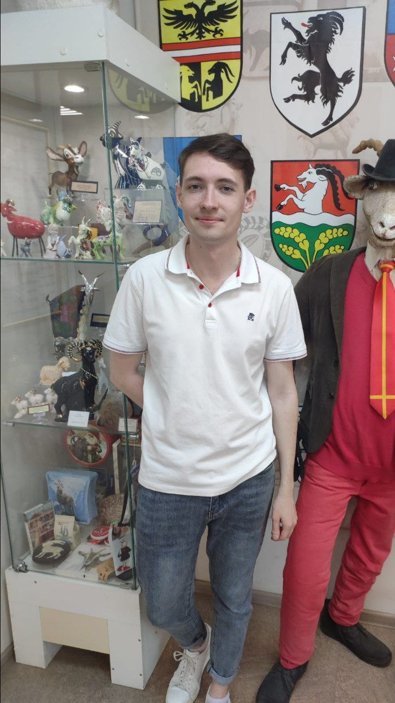

НИУ ВШЭ — Санкт-Петербург
«Машинное обучение и анализ данных»
Магистрант НИУ ВШЭ — Санкт-Петербург, «Машинное обучение и анализ данных».
Программирование · анализ данных · математика · электроника

Фотография под защитным слоем. Попробуйте стереть его монеткой.
Окончил бакалавриат ИТМО по направлению «Прикладная математика и информатика». Сейчас обучаюсь в магистратуре НИУ ВШЭ по программе «Машинное обучение и анализ данных».
Занимаюсь программированием, обработкой данных и техническими задачами, включая работу с электроникой и микроконтроллерами. Интересуюсь машинным обучением, вычислительными методами и исследовательской работой.
«Машинное обучение и анализ данных»
«Прикладная математика и информатика», программа «Компьютерные технологии и искусственный интеллект»
Python, C++, Java, Scala, Kotlin, SQL, MicroPython, Linux / Bash, Git / GitHub. Знаком с Clojure, HTML и PHP.
Анализ и обработка данных, численные эксперименты, основы машинного обучения и компьютерного зрения.
Линейная алгебра, дискретная математика, теория вероятностей, статистика, алгоритмы и структуры данных, численные методы.
Работа с датчиками и микроконтроллерами, программно-аппаратные системы, проектирование печатных плат.
Продолжите последовательность:
Это не арифметическая прогрессия.
Вспомните функцию Busy Beaver: S(n) — максимум шагов до остановки машины Тьюринга с n состояниями и двумя символами.
Исследовательский инструмент для выбора геометрии представления данных по матрице попарных расстояний с использованием спектральных характеристик.
Преобразование Gerber-файлов в траектории фрезерования и G-code: геометрические операции, оптимизация порядка обхода, SVG-предпросмотр.
Исследовал выбор подходящей геометрии представления данных по матрице попарных расстояний. Рассматривал евклидовы, сферические и гиперболические вложения, спектральные критерии и численные эксперименты. В рамках работы разработал Geometry Selector.
Пример с 20 синтетическими объектами и 8 признаками. Метод отображает многомерные данные в двумерном пространстве.
| № | F1 | F2 | F3 | F4 | F5 | F6 | F7 | F8 |
|---|
Перетаскивайте график мышью или пальцем; масштабируйте колёсиком или кнопками .
Три дополнительные звезды можно получить за исследование страницы. Прогресс сохраняется в этом браузере.
Сотрите серый слой с фотографии монеткой.
Не полученоНайдите звезду за пределами привычных координат.
Не полученоПродолжите последовательность из раздела навыков.
Не полученоМонетка расположена прямо под фотографией. Перетащите её на изображение.
Иногда для поиска звёзд полезнее дата рождения, чем данные наблюдений. И какой сейчас год?
Постройте MDS, а затем переместитесь к координатам X = 2004, Y = 2026.
Это значения S(1), S(2), S(3), S(4) функции Busy Beaver.
S(5) = 47 176 870.
Портфолио изучено на 100%. Формальная часть резюме от этого не изменилась, зато звёзды красивые.